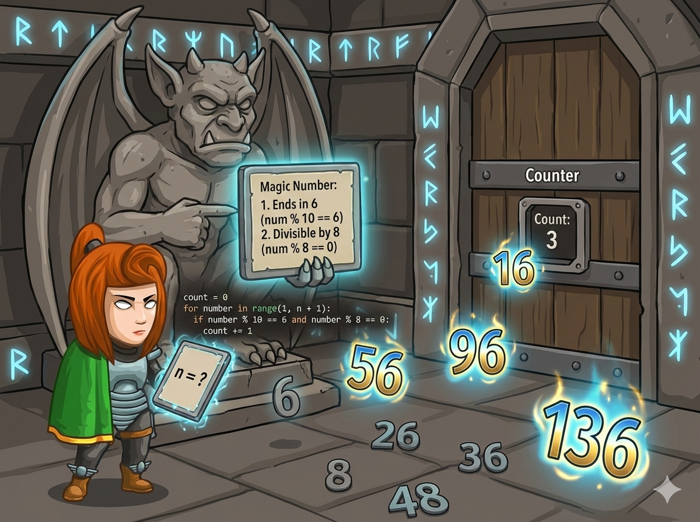

在地牢的符文走廊里，石像守卫告诉英雄：只有找到 “魔法数”，才能开启下一道门。
一个数字要是“魔法数”，必须 同时 满足两个条件：
👉 任务： 输入一个数字 n，请你数一数，从 1 到 n 之间一共有多少个魔法数？
我们要从 1 走到 n，检查每一个数字是不是魔法数。如果是，就用计数器记下来。
想知道一个数的个位是不是 6？
✅ 咒语：y % 10 == 6
想知道一个数能不能被 8 整除？
✅ 咒语：y % 8 == 0
题目要求“同时满足”，所以中间要用 逻辑与 连接。
✅ 组合：if (y % 10 == 6 && y % 8 == 0)
想知道一个数的个位是不是 6？
✅ 咒语：i % 10 == 6
想知道一个数能不能被 8 整除？
✅ 咒语：i % 8 == 0
题目要求“同时满足”，所以中间要用 and 连接。
✅ 组合：if i % 10 == 6 and i % 8 == 0:
使用 while 循环遍历，if 筛选，计数器 z 统计。
#include <iostream> using namespace std; int main() { int x; // x: 输入的范围上限 n int y = 1; // y: 循环变量，从 1 开始 int z = 0; // z: 计数器，记录魔法数的个数 cin >> x; // 读入 n // 只要 y 没有超过 x，就继续找 while (y <= x) { // 判断条件：个位是6 并且 能被8整除 if (y % 10 == 6 && y % 8 == 0) { z = z + 1; // 找到一个，计数器加 1 } y = y + 1; // 继续检查下一个数字 (千万别忘了！) } cout << z << endl; // 输出总数 return 0; }
使用 while 循环遍历，注意缩进和逻辑连接词。
n = int(input()) # 读入 n i = 1 # 循环变量，从 1 开始 count = 0 # 计数器 (原名sum，建议用count避免冲突) # 只要 i 没有超过 n while i <= n: # 判断条件：个位是6 并且 能被8整除 if i % 10 == 6 and i % 8 == 0: count += 1 # 计数加 1 i += 1 # 别忘了让数字变大！ print(count) # 输出结果